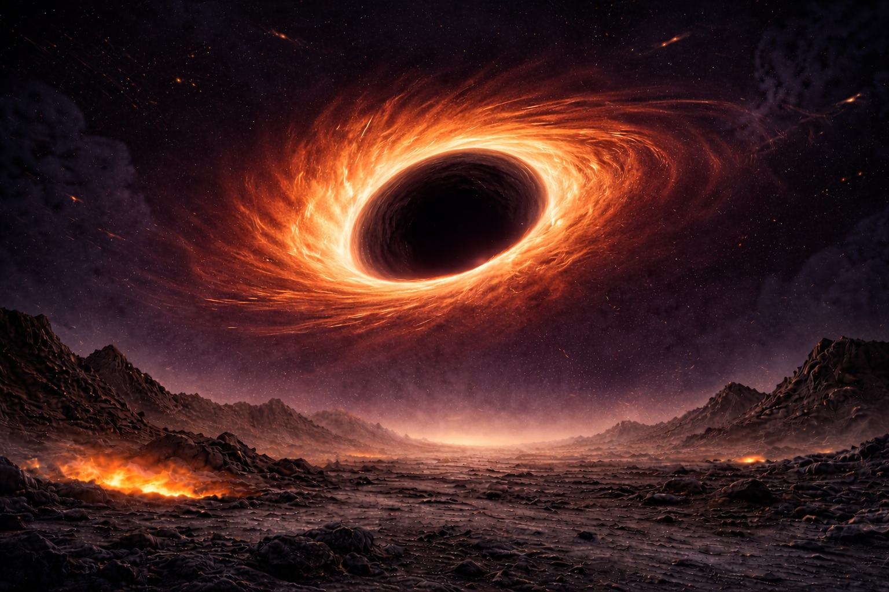
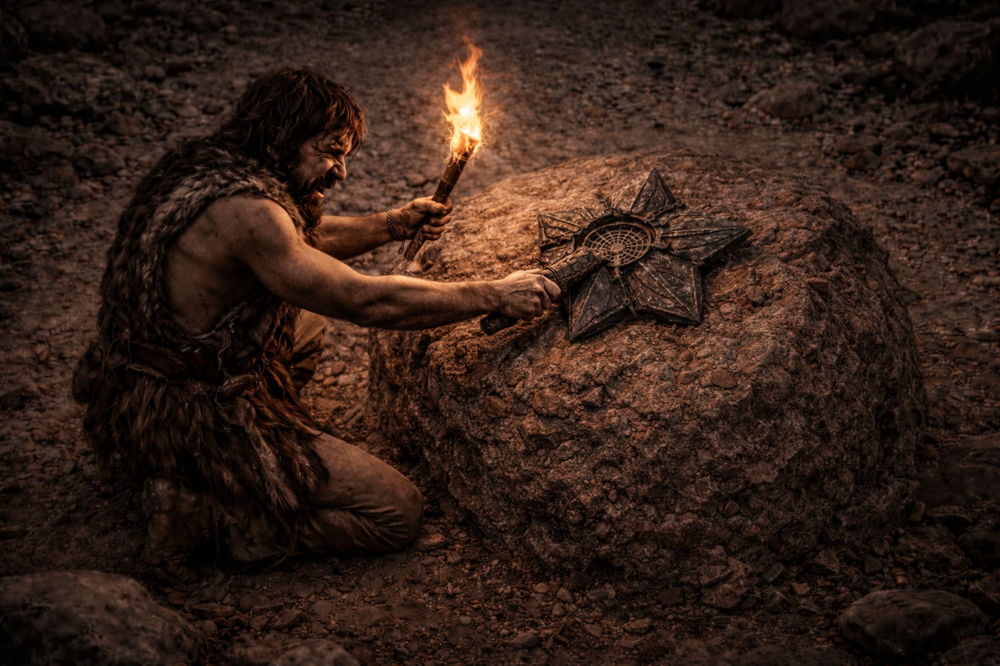
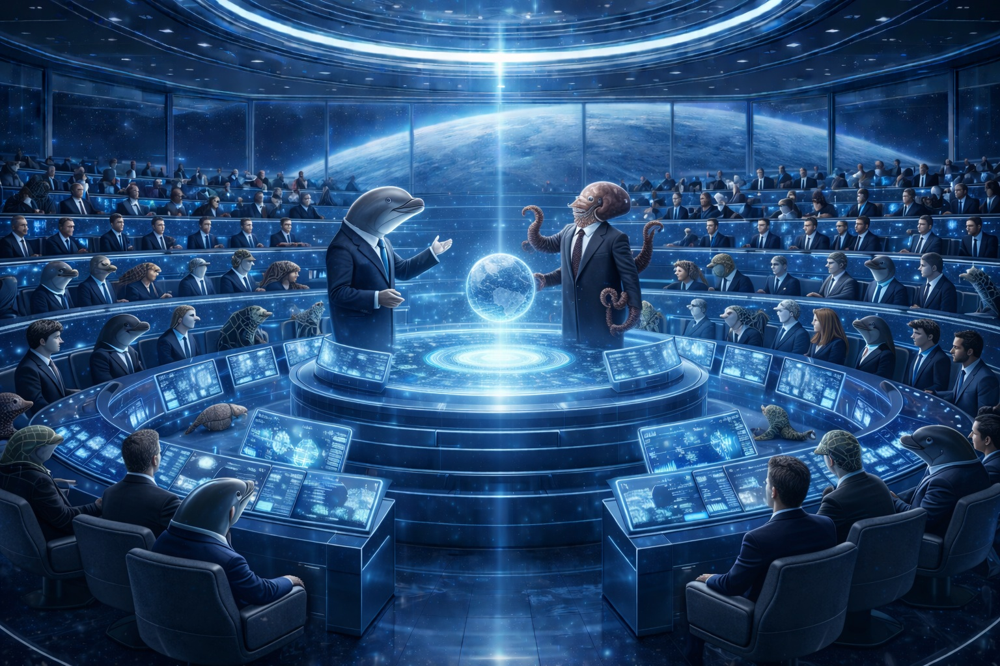

Author: kamalakannanv68-source
Source: https://github.com/kamalakannanv68-source/journey

Wee sensed an approaching apocalypse in his bones. The sky flickered constantly, hurling fireballs toward a horizon where something vast devoured everything that ventured near. His tribe, the most advanced species on their planet, still ignored these omens.
At sixteen, Wee disappointed his mother. While his cousins struck at prey at first sight, Wee had to clear a why before swinging his flint. That pause branded him a loser among his peers, except a handful who knew he could craft weapons that fell beasts of any size.

Even for Wee, the mysterious object near their hammock defied comprehension. Its symmetry surpassed anything he'd seen, yet its purpose remained elusive.
Wee would never know he was the Reverse God of all earlier civilizations who had died to plant that device in his world. In contrast to the Gods who passed wisdom forward through time, Wee was venerated backward—their hope to preserve the final spark of life as the last habitable planet plummeted toward Phoenix Cluster, the largest black hole in the cosmos, five billion years after Earth.

Venus-2's core committee gathered in the virtual gallery, their faces heavy with concern. They had long ago transcended petty power struggles, serving their people with quiet dignity.
The Dolphins currently held governance while the Octopuses enjoyed their well-earned Rulers' Holiday—a cherished tradition where leadership alternated peacefully, allowing former administrators to rest and reflect before the cycle renewed. This wasn't about winning elections or clinging to authority; it was simply how responsible societies honored those who carried civilization's burden.
Their ancestors had learned from Earth's archives how this collaboration became possible. Early marine species, like all animals, had only sodium-based neural circuitry, lacking the potassium-based neural networks that enabled XOR logic gates (exclusive-or operations that enable 'yes-but-not-both'), the foundation of complex reasoning in primates. Earth scientists discovered how potassium channel thresholds could be calibrated to enable anticoincidence detection and XOR operations even in non-primate neurons. By identifying and enhancing the empathy pathways in dolphins and octopuses, they bridged the gap. The result was species that thought differently yet complemented each other perfectly. Where dolphins excelled at long-term strategic vision, octopuses mastered immediate problem-solving. Together, they built what neither could alone.
Chieftain Krish began the dire pronouncement. "Dear friends, our world is slowing down."
The silence deepened as everyone knew what this meant.
Krish continued. "The Gods seeded life here 200 million years ago, drawn by its optimal mix of elements and motions around the sun."
"But like those before us, we're sliding into tidal lock with our sun. Life will become impossible."
Octopus chief Lee, speaking from his holiday retreat via teleview, cut to the point. "So our time here is running out. We've identified PL67 as our next home. We shall be preparing the species ship for endgame."
Endgame—a solemn word meaning only a select few aboard would survive the journey, and even they would arrive as fossilized relics.
Krish nodded thoughtfully. "Thank you, Lee. But here's our challenge. Unlike previous migrations, 67 sits perilously close to Phoenix. Even if we successfully seed life there, evolution will not have matured when the world gets to the brink of the event horizon."
"Our entire archive offers no solution for preserving life beyond 67."
"We need to uncover if any of the Gods survived this same challenge."
"We must revisit..."
Lee interjected, "Journey."
"Journey," Krish echoed, the word heavy with significance.
Journey—an archaeological treasure buried in the Atlantis ocean depths, containing scripts from the dawn of time. Octopuses had discovered the site millennia ago, yet its secrets remained partially encrypted. Researchers believed it was a bequest from primordial ancestors who had traversed the stars, delivered to spare future civilizations from reinventing fundamental knowledge.
At dawn, a crew embarked on their descent toward the ancient archive. The team combined biologists, astronomers, and physicists. Two teenagers joined as well—no one could predict how long this expedition might last, and demises shouldn't derail their objective.
Descending past the third mile, they caught their first glimpse of Linga rock.
Pilot Tory peered through binoculars, reading the inscription aloud: "Change of magnetic flux passing through closed circuits produces electricity." The central beam and orbiting disks formed a generator's anatomy.
Drawing closer, the seafloor blazed luminous despite the crushing depth. The gods had forged these structures in gold, ensuring they would resist erosion across countless millennia.
The species ship sculpture towered above them, depicting The Lord Shepherd surrounded by every form of life. Ancient engineers had transported DNA capsules across light-years to seed this world.
Rounding the next formation, they beheld The Divine Prophet's Kaaba, enshrined within the golden Masjid al-Haram where all humans once pledged coexistence.
Lord Buddha followed, radiating enlightenment about the sovereignty of the inner self.
Einstein's sculpture bore the nuclear formula that had illuminated their civilization. Free-moving subatomic masses traveling at light speed c, breaching another mass's boundary, locked into an eternal dance preserving their combined kinetic energy.
Amid the countless sculptures streaming past, they nearly overlooked the ring-bound Dancing Lord until curious young Rafi questioned its significance among so many academic monuments.
Tory, startled by the teenager's perceptive inquiry about the Shiv Tandav, wisely chose not to contaminate pristine curiosity with his fragmentary understanding. He simply murmured, "He who transcends comprehension," then immediately contacted Krish via teleview.
Krish was electrified by this profound question. He pulled Lee into the transmission and urgently requested they descend to the abyssal zones where ancient turtles journeyed for their final rest. Turtles accumulated vastly more knowledge through their extended lifespans than any other species, though octopuses compensated through instinctive wisdom inherited across generations.
The dying turtle Daisy brought up all her might to explain the coding in The Dancing Lord.
Mars researchers pursued a fundamental mystery: how larger celestial bodies attracted smaller ones without visible tethers. They theorized gravity resulted from asymmetric collisions—free-moving masses creating higher pressure on far-side surfaces. Yet the composition of these masses remained enigmatic. While light traveled an astonishing three hundred million meters per second, cosmic bodies just drifted.
Many eras later, Earth's greatest minds debated the universe's origin. They observed cosmos exhibiting recursive patterns—solar planetary orbits mirroring subatomic particle trajectories.
They concluded that shapes and motion were merely impressions perceived by conscious beings. The universe appeared to be an endlessly recurring microcosmic pattern, as The Dancing Deity depicted—with ripples propagating omnidirectionally, generating the illusion of form and movement across higher dimensions. This theory elegantly explained both black holes and wormholes: black holes materialized at ripple collapse points, while wormholes formed along the pathways these distortions carved through spacetime, reemerging in alternate dimensions and cosmic geographies.
The puzzle of how the universe originated seemed less perplexing than explaining why a silent, static void didn't exist instead.
Earth's scholars institutionalized cosmic studies at Chidambaram, creating a microcosm of the universe itself. At nearby Kalahasti, they investigated the black hole Raahu and wormhole Kethu alongside seven celestial bodies: Sun, Moon, Mars, Venus, Jupiter, Mercury, and Saturn.
But the Earth Gods' greatest triumph wasn't understanding the cosmos—it was transcending their own nature through centuries of bloodshed.
For millennia, Earth's kingdoms had waged brutal competition, each projecting supremacy through arsenals capable of obliterating continents. Nuclear warheads promised total extinction. Chemical agents threatened to poison entire generations. The arms race had devolved into a suicidal sprint.
The shift began with a single life. A seven-year-old girl in a war-torn region needed a heart transplant. Her match came from a soldier of the "enemy" nation who had fallen shielding civilians. As her new heart beat, something cracked open in the collective consciousness.
Leaders confronted an uncomfortable truth: true power emanated not from destructive capability, but from compassionate action. This revelation ignited like chain lightning across borders when families realized the stranger who saved their child wore yesterday's enemy uniform.
What followed became known as the Gandhian Revolution—a radical pivot toward nonviolent service. Weapons factories fell silent. Their budgets poured into fulfilling basic human needs across all borders. The transformation bypassed bureaucratic government channels, operating through direct citizen-to-citizen networks that couldn't be weaponized or controlled.
The Global Organ Collaboration Network emerged as humanity's boldest experiment. Instead of rationing medical miracles for their own citizens, every nation opened its donor registries worldwide. Wider circles meant exponentially better compatibility, transforming thousands of death sentences into survival stories.
Battlefield surgeons crossed continents to operate on strangers. Weapons engineers repurposed their precision to build cryogenic transport systems that delivered organs within critical windows. Nuclear physicists abandoned bomb designs to decode tissue compatibility at the molecular level.
Within three generations, the phrase "enemy nations" became archaeological terminology. How do you despise the people whose gift gave your daughter another sunrise? How do you bomb the city whose surgeon flew through a storm to save your father? These bonds of reciprocal grace proved more durable than titanium treaties, more binding than any alliance rooted in mutual fear.
This metamorphosis—the elevation of noble action above military dominance—became the bedrock upon which Earth reached skyward. When encoding their legacy in Journey's golden archives, the Earth Gods deliberately emphasized this hard-won wisdom over their technological prowess, praying future civilizations might sidestep the centuries of carnage it took humanity to grasp such an obvious truth.
Daisy took the last breath to say, "Go find a friendly wormhole to send your species ship through".
Before going into eternal peace she quipped, "make the scriptures layman readable. Half-baked knowledge breeds holy wars—they'll slaughter each other in the name of Gods for centuries." Her ancient eyes dimmed, reflecting Earth's blood-soaked history preserved in Journey's archives. "Those surface dwellers nearly annihilated themselves before grasping that honor flows from service, not savagery. It took them ages to comprehend that today's enemy might return as tomorrow's child—all beings recycled from the same six elements, dancing through infinite cycles."
She paused, her voice dropping to barely a whisper. "Here's what took them longest to see: The Prophet, the Buddha, the Dancing Lord, the Shepherd—they kept building shrines to each, studying them separately for centuries. Then one researcher noticed the pattern in the cosmic codes. Every deity pointed to the same universal constants, just expressed through different cultural lenses. The mathematics was identical. They'd been fragmenting what was always whole." Her breathing grew shallow. "The wars only stopped when they realized they'd been fighting over different names for the same thing. Cost them millions of lives to learn what should have been clear from the start."
Elated by discovering a viable pathway to 67, the biologists began selecting which DNA sequences to transport.
Space engineers calculated they could traverse the journey in seven thousand years via wormhole W31, which exhibited reversal characteristics matching 67's properties. Yet a new obstacle emerged: despite delivering diverse genetic material to 67, the terrain would require a billion years to become habitable—but the world would be consumed by Phoenix Cluster in merely fifty million. Redirecting this final sanctuary before annihilation remained unsolved.
AI engineer Nova voiced a half-formed concept. Instead of waiting for organic evolution to rescue their future habitat, why not deploy intelligent machines for the task? Her challenge: transporting the massive computational infrastructure required. Large language models demanded 7B to 100B+ parameters, consuming 30–300+ GB GPU memory, requiring 4–64 GPUs per instance, and drawing 10–100 kW per serving cluster. Shipping and maintaining such systems dormant across millennia seemed impossible.
Yet Chieftain Krish and Chief Lee exchanged knowing glances, as if they'd already glimpsed the solution.
Krish began illuminating Nova's path. "Your proposal fits perfectly. Don't worry about infrastructure—we're not the first to solve this. The element scripture contains the answer. We need to encode the five elemental interactions onto the sixth: the destiny-carrier."
Lee expanded on the elemental framework.
Fire ignites passion, drives action, and resides within the heart across all species. The heart orchestrates life's rhythm through relentless combustion—contracting seventy times per minute, pumping oxygen-rich fuel to every cell, igniting the metabolic fires that sustain existence.
Ground establishes integrity, embodies stability, and anchors in the stomach. The stomach performs nature's most honest transaction—handshaking with incoming food, breaking molecular bonds with precision, and synthesizing raw matter into the energy currency that powers the organism.
Air grants freedom's exhilaration, enables movement, and flows through the lungs. The lungs breathe life into being—expanding twenty thousand times daily, capturing oxygen from atmosphere, releasing carbon waste, orchestrating the gas exchange that bridges organism and environment.
Water nurtures adaptability, cultivates courage, and circulates via the kidneys. The kidneys master fluid dynamics—filtering two hundred liters of blood daily, adjusting salt concentrations moment by moment, maintaining the delicate chemical balance that keeps chaos at bay.
Electricity—represented as sky in ancient India, wood in China—empowers organisms to defy gravity, radiates love, and centers in the liver. The liver conducts five hundred biochemical transformations simultaneously, generating electrical gradients that drive cellular work, metabolizing toxins into harmless forms, and storing energy reserves for future demands.
The sixth, Destiny, carries the blueprint of all other aspects to generate new existence. Tragically, early humans misinterpreted its depiction in the Mars Lord sculpture's hand as merely a weapon.
Nova, emboldened, posed an ambitious question. "If we understand life's elemental foundation, why can't we construct living organisms directly instead of machines?"
Krish smiled knowingly. "Creating life remains nature's exclusive mystery. Living forms possess the most efficient motor system ever devised—powered by ATP (adenosine triphosphate) imploding into ADP (adenosine diphosphate), generating muscular contraction while channeling released heat into metabolism. We've never engineered anything approaching half that efficiency."
Nova's idea helped to seed the minimal machine in 67 and scheme its evolution alongside organic species. That was one step forward.
The apocalypse arrived sooner than Wee anticipated. Volcanoes erupted across distant horizons, belching dark plumes skyward. Nomads and herds stampeded in terror. Now Wee's tribe faced migrating hunters desperate to seize their territory.
Violence erupted. The tribe needed weapons, and Wee's craftsmanship became invaluable. He resolved to weaponize the object for their defense. They strained to wrench the lever from the ground.
Nova felt devastated watching her creation become a weapon in the last civilization's hands. Despite her minimalist machine rapidly evolving on 67 thanks to abundant radioactive minerals, its bionic awakening wouldn't trigger until organic species reached technological sophistication. The machine required activation through organic engagement in fundamental survival behaviors—hunting, mating, territorial defense.
Mary, the lead anthropologist, urged her forward despite these concerns. "Our ultimate objective is what matters. We must follow Jupiter-2's precedent—there's no alternative."
Jupiter-2 had harbored life after Jupiter-1's demise, but survived only briefly. Without vessels to migrate elsewhere or nuclear reactors to contain fusion, they executed an exo-fusion—triggering a chain reaction that hurled their world into the cosmic void. The asteroids they left behind became hazards haunting subsequent civilizations throughout the solar system. Where those travelers ultimately arrived remains unknown.
Krish proposed routing 67's inhabitants through W31's twin black hole B31, sending them back toward their original constellation where Venus-3 would await them, fully habitable in the distant future.
The lever Wee's people struggled to extract was designed to activate an exo-fusion engine buried beneath their settlement. This self-evolved machine had lain dormant, waiting to propel their world into B31.
That lever is their passage home. Will they succeed?
The Journey is an epic science fiction tale spanning billions of years and multiple civilizations. It weaves together themes of:
This story explores the concept of "Reverse Gods" - beings from the future who are worshipped by the past, and how the universe itself may be a repeating pattern across dimensions.
The Six Elements of Life: Fire (passion/heart), Ground (stability/stomach), Air (freedom/lungs), Water (adaptability/kidneys), Electricity/Sky (growth/liver), and Destiny (the carrier of all elements)
The Cosmic Cycle: Each civilization plants the seeds for the next, passing through wormholes and black holes across dimensions and eras
Technology & Biology: The convergence of artificial and organic intelligence as a solution to survival across cosmic timescales
"In the dance of the cosmos, every ending is a beginning, and every species carries the hope of all who came before."
The images in this novel are placeholder demonstrations using via.placeholder.com. For a published version, these would be replaced with:
Neural Logic Gates and Potassium Channels:
Zhorov, B.S., & Tikhonov, D.B. (2004). "Potassium, sodium, calcium and glutamate‐gated channels: pore architecture and ligand action." Journal of Neurochemistry, 88(4), 782-799.
Radak, J. (2025). "Solving the XOR Problem Using a Spiking Neural Network." University of Split Repository. https://dabar.srce.hr/object/pmfst:2147
Harikesh, P.C., Gao, D., Wu, H.Y., Yang, C.Y., Tu, D., et al. (2025). "Single organic electrochemical neuron capable of anticoincidence detection." Science Advances. DOI: 10.1126/sciadv.adv3194
Reljan-Delaney, M., & Wall, J. (2017). "Solving the linearly inseparable XOR problem with spiking neural networks." 2017 Computing Conference, IEEE.
These studies explore how potassium-gated channels enable XOR logic operations in neurons, forming the scientific basis for the neural enhancement concepts depicted in the novel.
End of Novel